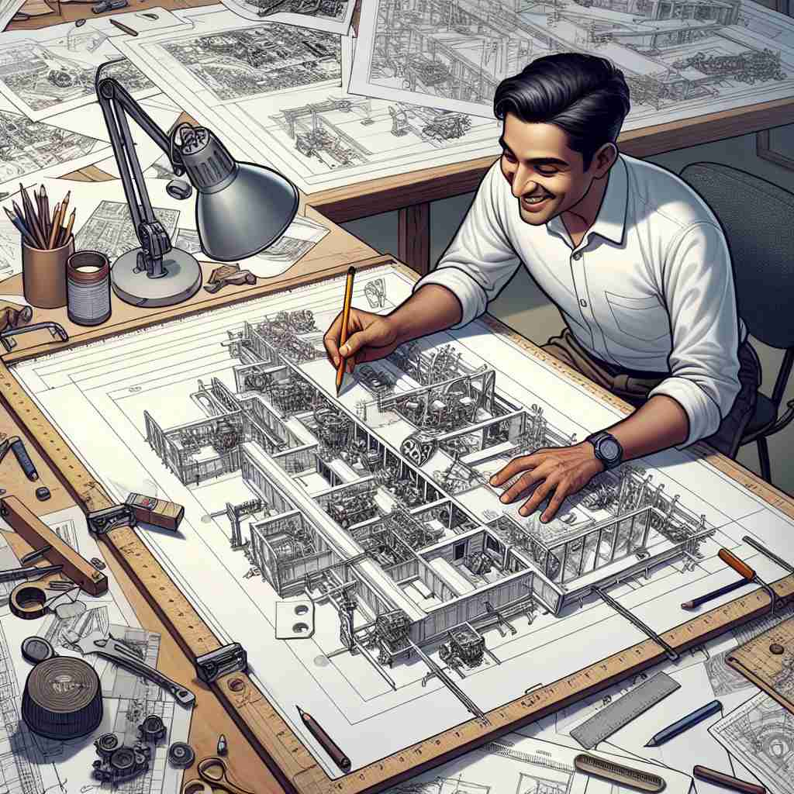

🗝️ v. to plan and make a detailed drawing of something to be made
🖼️ 在一家繁忙的建筑设计公司，设计师正坐在他的桌子前，专注地用铅笔在大张纸上画出一座新大楼的详细蓝图。他仔细考虑每一个建筑元素的位置，充分体现了'design'作为计划和绘制详细图纸的含义。
🔍 想象一个设计师在绘制图纸，这个核心动作体现了'design'的本质：规划和创造。无论是具体的图纸、抽象的策略，还是最终的成品和图案，都源于这个规划和创造的过程。通过联想这个画图的动作，你可以轻松理解和记忆'design'的各种用法。

💬 The architect will design a building with innovative features.

💬 The designer loves to design a dress for the upcoming fashion show.
💬 The team works together to design a product for their project.

💬 The architect needs to design a building before construction starts.
🗝️ v. to plan or create something for a specific purpose
🖼️ 在一个创新的科技实验室里，工程师们正在讨论为残障人士设计一款新的智能家居设备。他们专注于设备的实用性和便利性，展示了'design'为特定目的计划或创造某物的含义。
💬 They designed a new marketing strategy.
❓ 从绘图扩展到更广泛的创造和规划
🗝️ v. to intend for a specific purpose
🖼️ 在一间宽敞的会议室里，市场营销团队正热烈讨论如何设计一场新的广告活动，专门针对年轻消费者。最终的活动计划明确地显示了'design'为特定目的意图的意图。
💬 The course is designed for beginners.
❓ 规划的意图延伸为一般性的意图
🗝️ n. a plan or drawing showing how something will look or work
🖼️ 在一个工业展览会上，工程师正在向参观者展示一幅复杂的机械设计图。大家可以从这份图纸中清晰看到未来的机器将如何运作，解释了'design'作为展示外观或功能的计划或图纸的含义。
💬 She showed me the designs for the new house.
❓ 动词含义的名词化
🗝️ n. the arrangement of parts or details in a product or work of art
🖼️ 在一个艺术工作室里，艺术家正在调整拼贴画的构成。他审视不同颜色和形状的纸张如何组合，形成了引人入胜的视觉效果，这种布局正是'design'在一件产品或艺术作品中各种细节和部分安排的含义。
💬 I love the design of this smartphone.
❓ 从具体图纸扩展到整体安排
🗝️ n. a decorative pattern
🖼️ 在一个热闹的纺织品市场，客户正在挑选精美的面料。一块布上印着精致的花卉图案，吸引了她的目光。这种图案化的设计展示了'design'作为装饰性图案的含义。
💬 The carpet has a floral design.
❓ 从整体设计缩小到装饰性图案